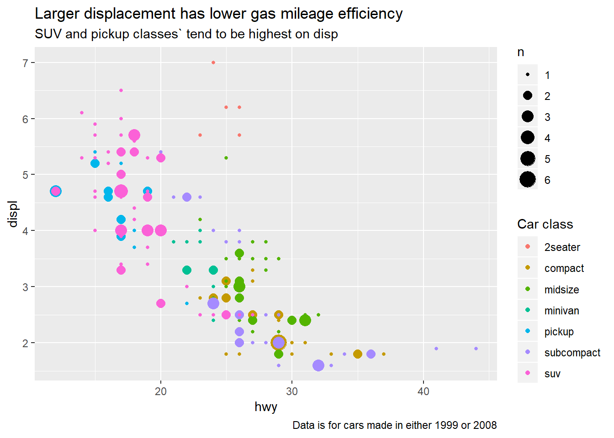
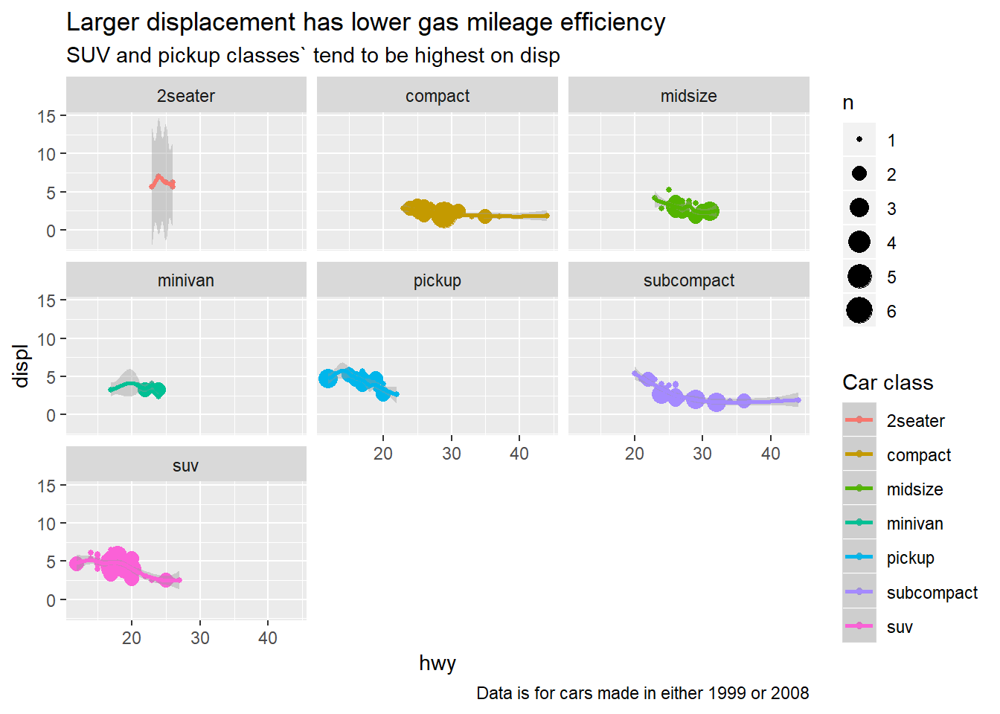
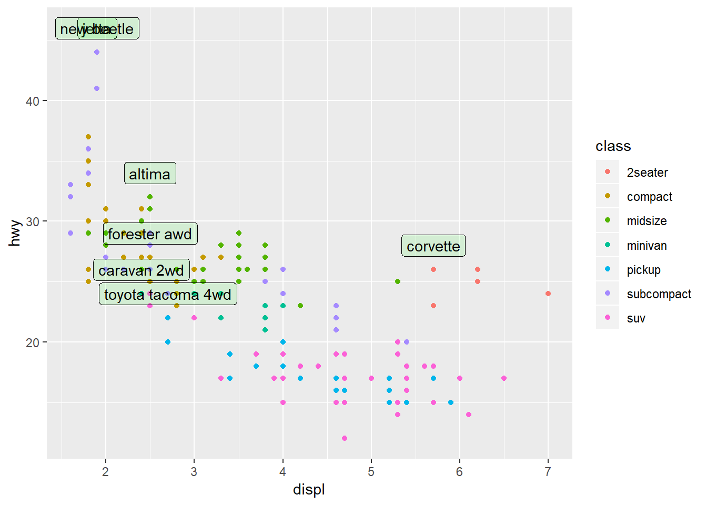
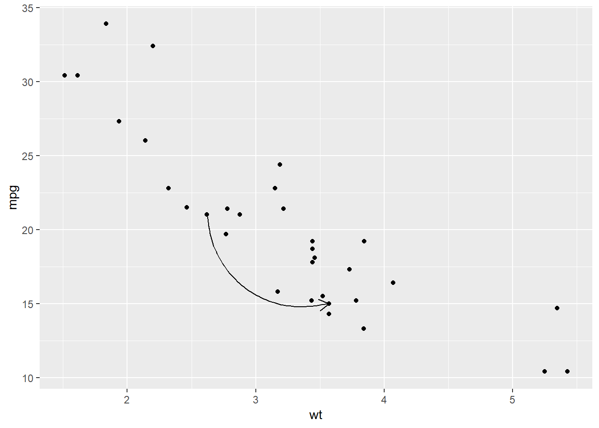
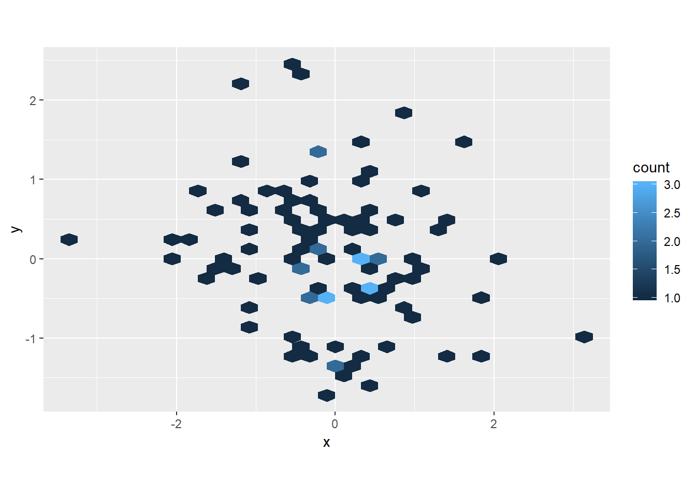
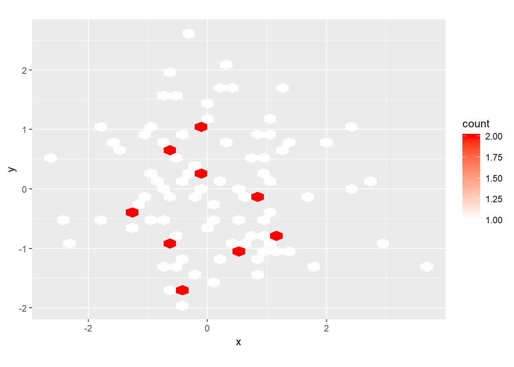
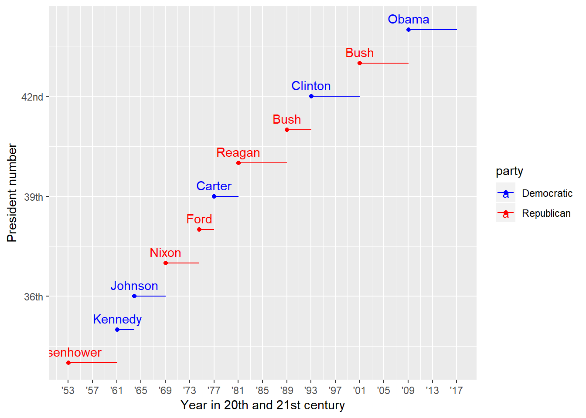

Ch. 28: Graphics for communication
labs()to add labels- common args:
title,subtitle,caption,x,y,colour, … - for mathematical equations use
quoteand see?plotmath- e.g. within
labs()could doy = quote(alpha + beta + frac(delta, theta))
- e.g. within
- common args:
geom_text()similar togeom_point()but with argumentlabelthat adds text where the point would be- use
nudge_xandnudge_yto move position around - use
vjust(‘top’, ‘center’, or ‘bottom’) andhjust(‘left’, ‘center’, or ‘right’) to control alignment of text - can use
+Infand-Infto put text in exact corners - use
stringr::str_wrap()to automatically add line breaks geom_label()is likegeom_text()but draws a box around the data that makes easier to see (can adjustalphaandfillof background box)ggrepel::geom_label_repel()is likegeom_label()but prevents overlap of labels
- use
geom_hline()andgeom_vlinefor reference lines (often usesize = 2andcolour = white)geom_rect()to draw rectangle around points (controlled byxmin,xmax,ymin,ymax)geom_segment()to draw attention to a point with an arrow, (common args:arrow,x,y,xend,yend)annotatecan add in labels by hand (not from values of dataframe)scale_x_continuous(),scale_y_continuous(),scale_colour_discrete(), …scale_{aes}_{scale type}()breaksandlabelsare key args (can setlabels = NULLto remove values)scale_colour_brewer(palette = "Set1")for color blind peoplescale_colour_manual()for definining colours with specific values, e.g.scale_colour_manual(values = c(Republican = "red", Democratic = "blue"))- for continuous scales try
scale_colour_gradient(),scale_fill_gradient(),scale_colour_gradient2()(two colour gradient, e.g. + / - values),viridis::scale_colour_viridis() - date scales are a little different, e.g.
scale_x_date()takes argsdate_labels(e.g.date_labels = "'%y") anddate_breaks(e.g.date_breaks = "2 days") scale_x_log10(),scale_y_log10… to substitute values with a particular transformation
theme()customize any non-data components of plots- e.g. remove legend with
theme(legend.position = "none")(could also have inputted “left”, “top”, “bottom”, or “right”)
- e.g. remove legend with
guides()to control display of individual legends – use in conjunction withguide_legend()orguide_colourbar()coord_cartesian()to zoom usingxlimandylimargs- can customize your themes, e.g.
theme_bw(),theme_classic()…, seeggthemesfor a bunch of others ggsave()defaults to save most recent plot- key options:
fig.width,fig.height,fig.asp,out.width,out.height(see chapter for details) - other options:
fig.align,fig.cap,dev(e.g.dev = "png")
- key options:
28.2: Label
28.2.1
Create one plot on the fuel economy data with customised
title,subtitle,caption,x,y, andcolourlabels.mpg %>% ggplot(aes(x = hwy, displ))+ geom_count(aes(colour = class))+ labs(title = "Larger displacement has lower gas mileage efficiency", subtitle = "SUV and pickup classes` tend to be highest on disp", caption = "Data is for cars made in either 1999 or 2008", colour = "Car class")
The
geom_smooth()is somewhat misleading because thehwyfor large engines is skewed upwards due to the inclusion of lightweight sports cars with big engines. Use your modelling tools to fit and display a better model.mpg %>% ggplot(aes(x = hwy, displ))+ geom_count(aes(colour = class))+ labs(title = "Larger displacement has lower gas mileage efficiency", subtitle = "SUV and pickup classes` tend to be highest on disp", caption = "Data is for cars made in either 1999 or 2008", colour = "Car class")+ geom_smooth()
You could take into account the class of the car
mpg %>% ggplot(aes(x = hwy, displ, colour = class))+ geom_count()+ labs(title = "Larger displacement has lower gas mileage efficiency", subtitle = "SUV and pickup classes` tend to be highest on disp", caption = "Data is for cars made in either 1999 or 2008", colour = "Car class")+ geom_smooth()+ facet_wrap(~class)
Take an exploratory graphic that you’ve created in the last month, and add informative titles to make it easier for others to understand.
Done seperately.
28.3: Annotations
28.3.1
Use
geom_text()with infinite positions to place text at the four corners of the plot.data_label <- tibble(x = c(Inf, -Inf), hjust = c("right", "left"), y = c(Inf, -Inf), vjust = c("top", "bottom")) %>% expand(nesting(x, hjust), nesting(y, vjust)) %>% mutate(label = glue::glue("hjust: {hjust}; vjust: {vjust}")) mpg %>% ggplot(aes(x = hwy, displ))+ geom_count(aes(colour = class))+ labs(title = "Larger displacement has lower gas mileage efficiency", subtitle = "SUV and pickup classes` tend to be highest on disp", caption = "Data is for cars made in either 1999 or 2008", colour = "Car class")+ geom_text(aes(x = x, y = y, label = label, hjust = hjust, vjust = vjust), data = data_label)
Read the documentation for
annotate(). How can you use it to add a text label to a plot without having to create a tibble?- function adds geoms, but not mapped from variables of a dataframe, so can pass in small items or single labels
mpg %>% ggplot(aes(x = hwy, displ))+ geom_count(aes(colour = class))+ labs(title = "Larger displacement has lower gas mileage efficiency", subtitle = "SUV and pickup classes` tend to be highest on disp", caption = "Data is for cars made in either 1999 or 2008", colour = "Car class")+ annotate("text", x = Inf, y = Inf, label = paste0("Mean highway mpg: ", round(mean(mpg$hwy))), vjust = "top", hjust = "right")
How do labels with
geom_text()interact with faceting? How can you add a label to a single facet? How can you put a different label in each facet? (Hint: think about the underlying data.)data_label_single <- tibble(x = Inf, y = Inf, label = paste0("Mean highway mpg: ", round(mean(mpg$hwy)))) data_label <- mpg %>% group_by(class) %>% summarise(hwy = round(mean(hwy))) %>% mutate(label = paste0("hwy mpg for ", class, ": ", hwy)) %>% mutate(x = Inf, y = Inf) mpg %>% ggplot(aes(x = hwy, displ))+ geom_count(aes(colour = class))+ labs(title = "Larger displacement has lower gas mileage efficiency", subtitle = "SUV and pickup classes` tend to be highest on disp", caption = "Data is for cars made in either 1999 or 2008", colour = "Car class")+ facet_wrap(~class)+ geom_smooth()+ geom_text(aes(x = x, y = y, label = label), data = data_label, vjust = "top", hjust = "right")
What arguments to
geom_label()control the appearance of the background box?fillargument controls background coloralphacontrols it’s relative brighness
best_in_class <- mpg %>% group_by(class) %>% filter(row_number(desc(hwy)) == 1) ggplot(mpg, aes(displ, hwy)) + geom_point(aes(colour = class)) + geom_label(aes(label = model), data = best_in_class, nudge_y = 2, alpha = 0.1, fill = "green")
What are the four arguments to
arrow()? How do they work? Create a series of plots that demonstrate the most important options.b <- ggplot(mtcars, aes(wt, mpg)) + geom_point() df <- data.frame(x1 = 2.62, x2 = 3.57, y1 = 21.0, y2 = 15.0) b + geom_curve( aes(x = x1, y = y1, xend = x2, yend = y2), data = df, arrow = arrow(length = unit(0.03, "npc")) )
angle(in degrees),length(useunit()function to specify with number and type, e.g. “inches”),ends(“last”, “first”, or “both” – specifying which end),type(“open” or “closed”)- See 28.3.1.5 for more notes on line options (not specific to
arrow())
28.4: Scales
28.4.4
Why doesn’t the following code override the default scale?
df <- tibble(x = rnorm(100), y = rnorm(100)) ggplot(df, aes(x, y)) + geom_hex() + scale_colour_gradient(low = "white", high = "red") + coord_fixed()
geom_hexusesfill, notcolour
df <- tibble(x = rnorm(100), y = rnorm(100)) ggplot(df, aes(x, y)) + geom_hex() + scale_fill_gradient(low = "white", high = "red") + coord_fixed()
What is the first argument to every scale? How does it compare to
labs()?name, i.e. what the title will be for that axis/legend/…labsfirst argument is...so requires you to name the input
Change the display of the presidential terms by:
- Combining the two variants shown above.
- Improving the display of the y axis.
- Labelling each term with the name of the president.
- Adding informative plot labels.
- Placing breaks every 4 years (this is trickier than it seems!).
presidential %>% mutate(id = 33L + row_number()) %>% ggplot(aes(start, id, colour = party)) + geom_point() + geom_segment(aes(xend = end, yend = id)) + geom_text(aes(label = name), vjust = "bottom", nudge_y = 0.2)+ scale_colour_manual(values = c(Republican = "red", Democratic = "blue"))+ scale_x_date("Year in 20th and 21st century", date_breaks = "4 years", date_labels = "'%y")+ # scale_x_date(NULL, breaks = presidential$start, date_labels = "'%y")+ scale_y_continuous(breaks = c(36, 39, 42), labels = c("36th", "39th", "42nd"))+ labs(y = "President number", x = "Year")
Use
override.aesto make the legend on the following plot easier to see.diamonds %>% ggplot(aes(carat, price)) + geom_point(aes(colour = cut), alpha = 1/20)+ guides(colour = guide_legend(override.aes = list(alpha = 1)))
Appendix
28.3.1.5
Not arrow() function specifically, but other line end options
ggplot(mpg, aes(displ, hwy)) +
geom_point(aes(colour = class)) +
geom_segment(aes(xend = displ +5, yend = hwy + 5), data = best_in_class, lineend = "round")
b <- ggplot(mtcars, aes(wt, mpg)) +
geom_point()
df <- data.frame(x1 = 2.62, x2 = 3.57, y1 = 21.0, y2 = 15.0)
b +
geom_curve(aes(x = x1, y = y1, xend = x2, yend = y2, colour = "curve"), data = df) +
geom_segment(aes(x = x1, y = y1, xend = x2, yend = y2, colour = "segment"), data = df)


Wickham, Hadley, and Garrett Grolemund. 2017. R for Data Science: Import, Tidy, Transform, Visualize, and Model Data. 1st ed. O’Reilly Media.